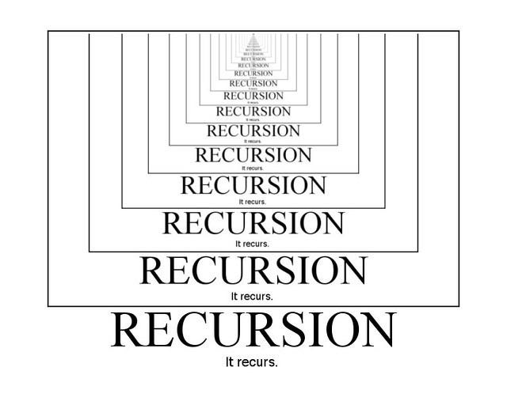
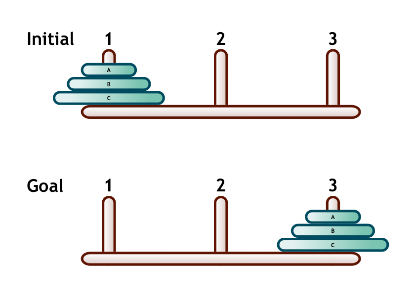
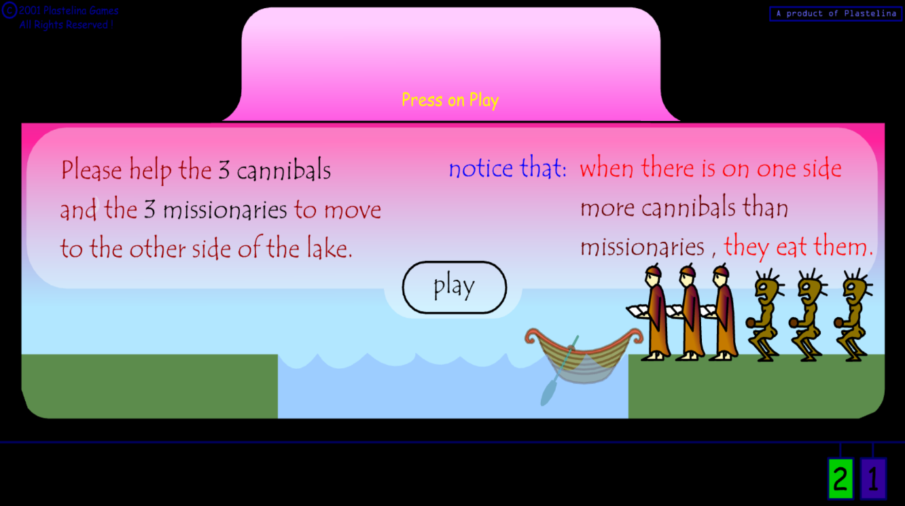

Recursion & Logic
Recursion is a problem-solving method used in computer science that has been studied over a long time and is considered to be highly useful. The method is based on the idea that a solution to a problem depends on the solution to a smaller instance of the same problem.

Source: Understanding Recursion with Factorial and an English Ruler Drawing (Medium)
The Breakdown
The formulation of a problem in a manner that it is expressed as an instance of a smaller instance of the same problem is called the recursive case.
The Direct Solution
This successive reduction of the problem should lead to an instance of the problem that can be directly solved. This directly (or trivially) solvable instance of the problem is called the base case.
01. Computing the Factorial Recursively
A common example of this method is the computation of the factorial function. The objective is to gradually reduce the originally more complex problem into a much simpler problem until it eventually reaches the base case.
For example, the factorial function fact originally called with the parameter n, will call itself with the parameter n - 1.
- The Recursive Case: For the factorial function, this can be stated as:
- n! = n(n - 1)! ∀n > 0
- The Base Case: We define the base case as the factorial of 0 is equal to 1.
Let's review the actual Python code.
Notice how the mathematical definition translates directly into code.
n! = n × (n - 1)! (if n > 0)
# Base Case
if num == 0:
return 1
# Recursive Case
else:
return num * fact(num - 1)
When the hardware actually runs the instructions, it pauses the current function, saves the state, and stacks the new function on top. Hover below to watch Python resolve fact(3):
02. The Recursion Tree
We can create a tree structure to visualize the computation of the factorial to better understand how recursive calls are made with different parameter values.
The initial function call breaks down into smaller sub-problems (n * (n-1)!) until it hits the absolute bottom—the Terminal Condition.
Once the terminal condition is met, the math physically reverses. You build the solution from bottom to top, passing the calculated values back up the chain.
Practice Problems
Try these problems on your own using recursion.
Greatest Common Divisor (GCD)
Write a recursive Python function to find the absolute largest positive integer that cleanly divides two target numbers without leaving a remainder (using the Euclidean algorithm).
> INTEL: If y hits 0, return x. Else, return gcd(y, x % y).
The nth Power Function
Write a recursive Python function to mathematically calculate the exact value of a base number raised to the power of n (for example, computing 24 = 16).
> INTEL: Base case: Exponent is 0 (return 1). Recursive case: Multiply base by power(base, exp - 1).
03. Iteration vs. Recursion
The ultimate architectural showdown. Any problem solved using a recursive algorithm can generally be cracked using standard iteration (like a for or while loop). But which approach should you actually use in the field?
While recursion only requires structuring the problem so it progressively becomes simpler, iteration requires the explicit formulation of a solution where an indexed computation is aggressively looped through to achieve the result.
- Provides significantly more elegant solutions to complex problems.
- The logic is generally easier to understand and simple to code.
- The Fatal Flaw: It is highly inefficient. Repeatedly calling the function inside itself generates a massive run-time call stack equal to the number of calls (plus arguments and system states), burning through memory fast.
- Relies on a formulated, indexed computation mathematically looping through data.
- The Major Advantage: It is significantly more efficient. It does not generate massive memory overhead or require saving continuous system states to a call stack.
- Can sometimes be harder to read or require clunkier code setup for deep mathematical problems compared to recursion.
04. Iterative Implementation in Python
To avoid the massive memory overhead of a recursive call stack, we can translate these algorithms into highly efficient iterative loops using for and while statements.
ans = 1
for x in xrange(1, n + 1):
ans *= x
return ans
ans = 1
for k in xrange(1, n + 1):
ans *= x
return ans
Standard iteration is great, but we can push the computational efficiency even further. We can mathematically optimize the nth power calculation by halving the exponent at each step, drastically reducing the total number of loops required by the machine.
ans = 1
num = a
k = n
while k > 0:
if k % 2 == 1:
ans = ans * num
num = num * num
k = k // 2
return ans
05. Tail Recursion & Optimization
Standard recursion can use a lot of memory because each recursive call is stored until it finishes. To fix this run-time inefficiency, engineers use Tail Recursion.
- In a tail-recursive function, the recursive call is the last thing the function does. There is no additional work left to do after the call returns.
- Because of this, the computer doesn't need to keep creating new memory spaces for every recursive call. It can reuse the same space, making it work much like an efficient while loop.
if y == 0:
return x
else:
return gcd(y, (x % y))
This function finds the Greatest Common Divisor (GCD) of two numbers. For example, let's calculate gcd(48, 18):
Here is exactly what happens at each step:
- The function checks whether y is 0.
- If it isn't, it calls itself again using y and the remainder of x ÷ y.
- This continues with smaller numbers each time.
- When y finally becomes 0, the function stops and returns x.
That final value is the GCD. So: gcd(48, 18) = 6
The Takeaway: The important part is that each recursive call gets the result it needs directly, with no additional calculation left afterward. This makes it a flawless, simple example of tail recursion.
06. Towers of Hanoi
This is the classic, definitive problem used to illustrate recursion. You have 3 pegs (A, B, C) and n disks stacked in decreasing size. The goal is to move the entire stack from Peg A to Peg B.
- You may only move one disk at a time.
- At no time may you place a larger disk on top of a smaller disk.

For three disks, we can solve the problem by breaking it into smaller versions of the same problem:
- Move the smaller disks (A and B) from Peg 1 to Peg 2.
- Move the largest disk (C) from Peg 1 to Peg 3.
- Move disks A and B from Peg 2 to Peg 3.
The key idea is that moving two disks is itself another Towers of Hanoi problem. We can keep breaking the problem into smaller versions until there is only one disk left to move.
This is where recursion comes in. The same process is repeatedly applied to smaller stacks until the entire tower reaches the goal peg.
The following Python code implements the recursive solution to the Towers of Hanoi.
# Base Case
if n == 1:
print("Move disk 1 from peg", from_peg, "to peg", to_peg)
return
# Recursive Case
TowerOfHanoi(n-1, from_peg, spare_peg, to_peg)
print("Move disk", n, "from peg", from_peg, "to peg", to_peg)
TowerOfHanoi(n-1, spare_peg, to_peg, from_peg)
07. Exercises
Now, apply what you've learned and design your own recursive solutions.

1. The Recursive Array Sum
The Scenario: You are handed a list of sequential numbers, such as [0, 1, 1, 2, 3, 5, 8, 13, 21, 34].
The Task: Calculate the absolute sum of the array. CONSTRAINT: You must solve this recursively without using standard 'for' or 'while' loops.
Input: [0, 1, 1, 2, 3, 5]
Output: 12
Input: [8]
Output: 8
⚠️ I gave up. Show me the answer.
def recursive_sum(numbers):
# Base Case: No numbers left to sum
if len(numbers) == 0:
return 0
# Recursive Case: Add the first number to the sum of the rest
return abs(numbers[0]) + recursive_sum(numbers[1:])
print(recursive_sum([0, 1, 1, 2, 3, 5, 8, 13, 21, 34]))2. The Palindrome Check
The Scenario: You need to verify if system-generated hash strings read exactly the same forwards and backwards.
The Task: Determine whether a given word is a palindrome (e.g., "radar", "madam"). CONSTRAINT: You must solve this recursively without using string reversal shortcuts like word[::-1] or standard loops.
Input: "radar"
Output: True
Input: "hello"
Output: False
⚠️ I gave up. Show me the answer.
def is_palindrome(word):
# Base Case: 1 or 0 letters left means it is inherently a palindrome
if len(word) <= 1:
return True
# Recursive Case: Check outer letters, then strip them and recurse inner string
if word[0] == word[-1]:
return is_palindrome(word[1:-1])
else:
return False
print(is_palindrome("radar"))3. The River Crossing Algorithm
The Scenario: Three missionaries and three cannibals must cross a river using a boat that holds exactly two people.
The Task: Write a recursive search algorithm to find the sequence of moves. CONSTRAINT: If cannibals ever outnumber missionaries on either bank, the missionaries are eaten. Use recursion to map the state space and backtrack if a path fails.
Input: Start state (3M, 3C, Boat Left)
Output: Valid path of states reaching (0M, 0C, Boat Right)
⚠️ I gave up. Show me the answer.
def river_crossing(state, path, visited):
m_left, c_left, boat = state
# Base Case: Everyone safely across
if m_left == 0 and c_left == 0:
return path + [state]
visited.add(state)
# Possible boat moves: (Missionaries, Cannibals)
moves = [(1, 0), (2, 0), (0, 1), (0, 2), (1, 1)]
for m, c in moves:
if boat == 1: # Boat traveling Right
next_state = (m_left - m, c_left - c, 0)
else: # Boat traveling Left
next_state = (m_left + m, c_left + c, 1)
nm, nc, nb = next_state
m_right, c_right = 3 - nm, 3 - nc
# Validation checks
valid_left = (nm == 0 or nm >= nc)
valid_right = (m_right == 0 or m_right >= c_right)
valid_counts = 0 <= nm <= 3 and 0 <= nc <= 3
if valid_left and valid_right and valid_counts and next_state not in visited:
result = river_crossing(next_state, path + [state], visited.copy())
if result:
return result
return None # Dead end, backtrack
solution = river_crossing((3, 3, 1), [], set())
print("Sequence found! Path length:", len(solution))